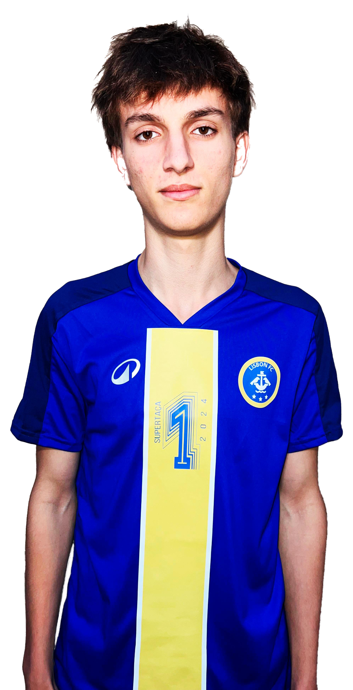
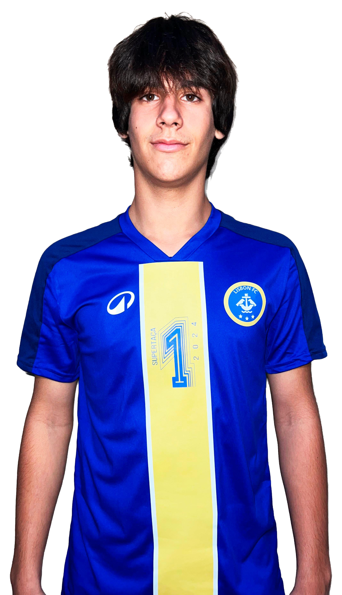
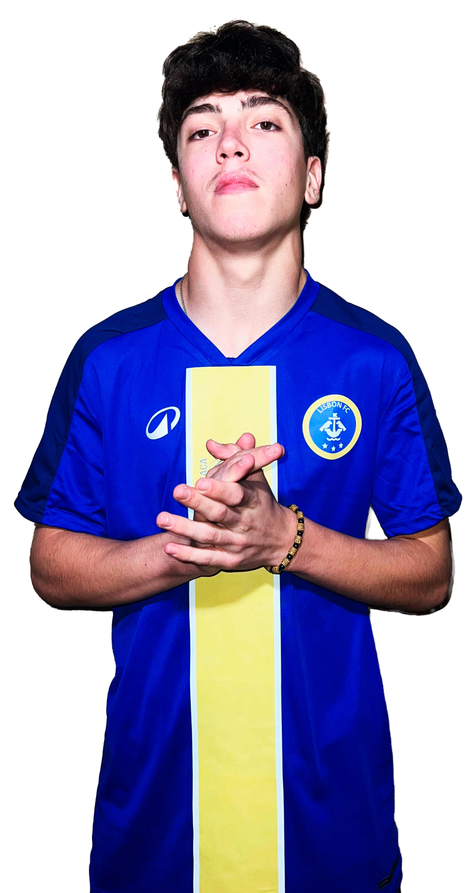
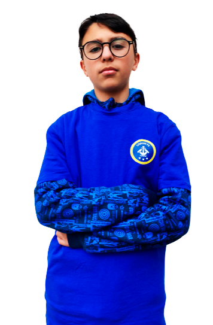
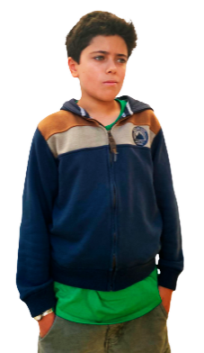

Equipa Adversária - Lisbon FC
Reveja o resultado e todas as estatísticas do primeiro jogo oficial da história do Lisbon FC.
O avançado apontou um poker de golos no primeiro jogo oficial do clube, mas assumiu que a derrota nas grandes penalidades deixou um travo amargo numa tarde histórica.
O guarda-redes e presidente-fundador do Lisbon FC assistiu, de dentro do relvado, ao nascimento oficial do clube, num dia que classificou como inesquecível independentemente do resultado.
O defesa e cofundador do clube destacou o espírito de luta da equipa, mesmo com apenas cinco jogadores em campo, frente a um adversário mais experiente.
Terminado o primeiro jogo oficial da história do Lisbon FC, disputado no Play Arena Belém. Depois de um dramático empate a 4-4, com um poker de golos de Sánchez, o jogo de abertura ficou decidido nas grandes penalidades, com a equipa adversária a vencer por 2-1.

Sem mais jogadores disponíveis, Sánchez voltou a bater, mas falhou ao rematar ao centro, selando o triunfo da equipa adversária por 2-1 nas grandes penalidades.
Numa penalidade crucial, o remate foi para o canto superior direito, mas Vicente Sousa voou para fazer uma defesa soberba e manter viva a esperança do Lisbon FC.

Bidarra rematou ao centro, mas o guarda-redes adversário defendeu sem grande dificuldade.
O remate saiu em direção ao meio da baliza e Vicente Sousa defendeu, mantendo o Lisbon FC na luta.
Pereira rematou, mas a bola saiu junto ao poste esquerdo, desperdiçando a oportunidade de igualar.
Santiago colocou a bola no canto superior esquerdo com uma grande penalidade fantástica, sem qualquer hipótese para Vicente Sousa.

Rodrigues não hesitou, correu para a bola e converteu com autoridade, repondo a igualdade.
A equipa adversária não desperdiçou e converteu a sua primeira tentativa.
Sánchez abriu a marcação de grandes penalidades, mas o guarda-redes adversário adivinhou o canto e defendeu, deixando o Lisbon FC em desvantagem logo de início.
Após um dramático 4-4, a equipa adversária venceu o jogo de abertura por 2-1 nas grandes penalidades.
Já no último minuto do jogo de abertura, Sánchez sofreu falta exatamente no mesmo local do livre da segunda parte e apontou o quarto golo pessoal, empatando a partida em 4-4 e completando o poker.
Um longo lançamento lateral chegou à grande área e encontrou este jogador completamente isolado, que rematou de primeira em pleno voo para fazer o 3-4.
Logo após o intervalo, uma mão na bola da equipa adversária perto da grande área resultou num livre perigoso. Sánchez rematou para o canto inferior esquerdo e fez o 3-3.
Decorridos os primeiros 20 minutos no Play Arena Belém, no primeiro jogo oficial da história do clube, o marcador está do lado da equipa adversária por 2-3. Sánchez (2', 11') marcou os dois golos do Lisbon FC na primeira parte.
Após um alívio de Vicente Sousa, a equipa adversária recuperou a bola, combinou entre vários jogadores e, com um passe em profundidade, rematou para o canto inferior esquerdo, adiantando-se pela primeira vez na tarde.
Um minuto depois de uma perda de bola de Rodrigues no meio-campo, a equipa adversária respondeu com um simples passe rasteiro para empatar a partida em 2-2.
A equipa adversária respondeu com um passe em profundidade para o avançado, que finalizou sem hipóteses para Vicente Sousa.
Gonçalo Pereira serviu com um passe rasteiro dentro da área e Sánchez apenas teve de encostar para o fundo das redes, bisando na tarde e fazendo o 2-0.
Logo aos 2 minutos do primeiro jogo oficial do clube, Rodrigues cruzou para o poste mais afastado e Sánchez, de joelho, desviou para o fundo da baliza, adiantando o Lisbon FC.
Rola a bola no Play Arena Belém para o primeiro jogo oficial da história do clube: duas partes de 20 minutos para decidir o jogo de abertura.
O jogo de abertura foi apitado apenas por um árbitro, Tomé Beles, sem árbitros assistentes.
Fundado há poucos dias por Vicente Sousa, Duarte Gomes e Alfredo Bidarra, o Lisbon FC estreia-se esta tarde no Play Arena Belém frente a uma equipa adversária, no primeiro jogo oficial da história do clube.
O defesa bisou pela segunda partida consecutiva, sendo decisivo no empate a três golos diante de uma equipa adversária mais experiente.
O avançado fez um túnel ao guarda-redes adversário antes de rematar para o fundo da baliza, um dos lances mais aplaudidos da tarde.
O defesa e cofundador do clube assistiu o golo de Sánchez com um passe em profundidade preciso, um dos melhores lances da equipa na tarde.
Empate a três golos no segundo jogo oficial da história do Lisbon FC, disputado no Play Arena Belém. Rodrigues, com um bis, e Sánchez marcaram para os anfitriões; a equipa adversária respondeu por três vezes, incluindo um golo desde o meio-campo, para fixar o resultado em 3-3.
Sánchez serviu Rodrigues à entrada da área, que rematou de primeira, em pleno voo, para o fundo da baliza, completando o seu bis e fechando o resultado em 3-3.

A equipa adversária voltou a colocar-se em vantagem com um remate bem colocado ao poste esquerdo, sem hipóteses para Vicente Sousa.
Decorridos os primeiros 20 minutos no Play Arena Belém, o marcador está empatado a 2-2. Rodrigues (7') e Sánchez (16') marcaram para o Lisbon FC.
Alfredo Bidarra serviu um passe em profundidade primoroso para Sánchez, que fez um túnel ao guarda-redes antes de rematar para o fundo da baliza, num golo fantástico.
Logo no pontapé de saída que se seguiu ao golo anterior, o avançado adversário viu Vicente Sousa adiantado e rematou em arco desde o meio-campo, surpreendendo o guarda-redes.
Na sequência de um canto, Sánchez recebeu o cruzamento e tentou rematar, mas viu o remate bloqueado. Rodrigues aproveitou o ressalto para empatar a partida.
A equipa adversária abriu o marcador logo aos 6 minutos, com um remate de fora da área sem hipóteses para Vicente Sousa.
Rola a bola no Play Arena Belém para o segundo jogo oficial da história do clube: duas partes de 20 minutos, tal como no jogo de abertura.
O jogo foi apitado apenas por um árbitro, Tomé Beles, sem árbitros assistentes.
Duas semanas depois da estreia oficial, o Lisbon FC volta a receber uma equipa adversária no Play Arena Belém, num novo teste para o projeto liderado por Vicente Sousa.
O avançado, que entrou aos 4 minutos e ainda assim apontou um golo e uma assistência, reconheceu a diferença de nível diante de uma equipa visitante mais rotinada.
O treinador assumiu que a equipa não esteve ao nível exigido, mas destacou a reação nos instantes finais como um sinal de carácter do grupo.
Goleada pesada para o Lisbon FC no terceiro jogo oficial da sua história: 7-2 diante de uma equipa visitante bastante mais rotinada. Gonçalo Pereira e Rodrigues, já nos instantes finais, evitaram um resultado ainda mais desfavorável.
Já no último minuto, Gonçalo Pereira assistiu Rodrigues, que rematou com muita força para reduzir a diferença para o resultado final.
Um cruzamento rasteiro ao segundo poste apanhou a defesa mal posicionada; Vicente Sousa tentou o corte mas chegou tarde, sofrendo o golo que fez o 1-7.
Sánchez fez a mudança de ala e Rodrigues simulou o remate, deixando a bola seguir para Gonçalo Pereira, que a rematou de primeira para reduzir a desvantagem.
Um erro na saída de bola da defesa do Lisbon FC ofereceu a bola à equipa visitante, que não perdoou.
Mais um cruzamento para a área e mais um cabeceamento certeiro da equipa visitante, que ampliou a vantagem.
Decorridos os primeiros 20 minutos no CT do Lisbon FC, a equipa está a perder por 0-4. Ricardo Fialho (2) e Miguel Ladeira marcaram para a equipa visitante.
Ricardo Fialho voltou a driblar a defesa do Lisbon FC de forma isolada antes de finalizar para o fundo da baliza.
Na sequência de um cruzamento para a área, Miguel Ladeira cabeceou para o fundo da baliza, ampliando a vantagem da equipa visitante.
Na sequência de um canto, a equipa visitante construiu uma jogada coletiva e Ricardo Fialho, depois de driblar vários defesas, bateu Vicente Sousa.
Alfredo Bidarra cometeu uma mão na bola perto da área e a equipa visitante não perdoou, marcando o livre direto no canto inferior esquerdo da baliza.
Rola a bola no CT do Lisbon FC para o terceiro jogo oficial da história do clube: duas partes de 20 minutos diante de uma equipa visitante mais rotinada.
O jogo foi apitado apenas por um árbitro, Tomé Beles, sem árbitros assistentes.
Depois de dois jogos equilibrados no Play Arena Belém, o Lisbon FC regressa ao seu antigo Centro de Treinos para receber uma equipa visitante com mais experiência competitiva.
Sem jogadores suficientes para a final, o treinador assinou contrato de atleta dias antes da partida — e acabou por selar o triunfo com um golo e uma assistência na conquista do primeiro título da história do clube.
Depois de bisar logo nos primeiros dez minutos da final e ainda assistir o golo de Duarte Gomes, o avançado não escondeu a emoção: "Esta foi sem dúvida a melhor vitória da minha vida."
O guarda-redes destacou a defesa a um remate de longe de Xavier Ramos, ainda com o resultado em 3-0, como um dos momentos-chave para manter a vantagem do Lisbon FC.
O Lisbon FC venceu a Amadora FC por 4-2 e conquistou o primeiro título da sua história. Gonçalo Pereira (2), Duarte Gomes e Sánchez marcaram para os campeões, numa final em que o próprio treinador, Duarte Gomes, teve de assinar contrato de atleta dias antes por falta de jogadores disponíveis — e ainda assim decidiu o jogo com um golo e uma assistência.
No último minuto, com a Amadora FC lançada em busca do empate, Duarte Gomes travou o ataque e serviu um passe em profundidade para Sánchez. Com Ricardo longe da baliza, Sánchez rematou de longe para fechar a contagem e confirmar o primeiro título da história do Lisbon FC.
Alfredo Bidarra tentou roubar a bola a Xavier Ramos, que procurava espaço para rematar, mas o avançado da Amadora FC acabou por concluir na mesma, sem que Vicente Sousa conseguisse sequer reagir.
Já na segunda parte, a Amadora FC chegou ao golo em contra-ataque: Santiago serviu Xavier Ramos, que encontrou um espaço e rematou colocado, superando Vicente Sousa.
Fim da primeira parte no Play Arena Belém: Lisbon FC 3-0 Amadora FC. Gonçalo Pereira, com um bis, e Duarte Gomes marcaram para os anfitriões, antes do intervalo de 5 minutos habitual neste formato.
Sánchez serviu Gonçalo Pereira para distribuir o jogo, e Duarte Gomes apareceu na ala esquerda para receber o passe do avançado. Numa jogada individual notável, Duarte deixou o defesa da Amadora FC para trás e rematou de fora da área, batendo Ricardo no canto inferior esquerdo.
Alfredo Bidarra encontrou Gonçalo Pereira a cortar para dentro pela direita, com um passe em profundidade. Pereira, de primeira e de pé esquerdo, mudou a direção da bola para bisar e colocar o Lisbon FC a vencer por 2-0.
Ainda no arranque da final, Gonçalo Pereira roubou a bola à equipa que atacava e combinou com Duarte Gomes, que serviu um passe em profundidade decisivo. Pereira ficou isolado frente ao guarda-redes e faturou de pé esquerdo.
Rola a bola no Play Arena Belém para a final da Supertaça 2024, o primeiro jogo a título do Lisbon FC: duas partes de 20 minutos diante da Amadora FC.
A final não teve arbitragem oficial: Tomé Beles, árbitro habitual do Lisbon FC, não esteve disponível para o jogo, que decorreu sem árbitro.
Antes da final, o treinador do Lisbon FC deixou a garantia: "A equipa está bem preparada, treinámos bem, vamos lutar até ao fim para ganhar o título que tanto merecemos."
O jogo será apitado por Francisco Figueira, sem árbitros assistentes confirmados até ao momento.
O Lisbon FC recebe o Malandros FC no Play Arena Belém para a defesa do título da Supertaça. Pela primeira vez, o jogo terá um formato diferente: duas partes de 30 minutos, com um intervalo de 10 minutos, e a equipa vai a jogo com 7 titulares em vez dos habituais 5. Daria Vinokurova, treinadora principal do Lisbon FC, comanda a equipa pela primeira vez esta época; do lado do Malandros FC, Afonso Gonçalves é apontado como treinador, ainda sem confirmação oficial.
